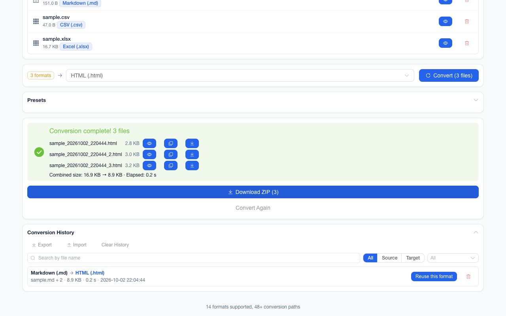

离线 · 无上传 · 浏览器本地完成Offline · no uploads · runs in the browser
PNG 转 PDF——像素不重画，页面就是这张图Convert PNG to PDF without redrawing a pixel — the page is the picture
这条链路与别的路不太一样：它是「把这张 PNG 放进 PDF 容器」，不是「重画一遍再塞进去」。像素一个都不丢，产物是无损的。但无损不等于不变大——PDF 用自己的流格式重存这些像素，实测几张截图的产物落在原 PNG 的 1.1–1.3 倍，画面越碎越接近 1.5 倍。要压体积请在图片侧解决（换 WebP、缩最长边），别指望这一转。页面尺寸直接由图像像素按 96 dpi 换算成点（px × 72 ÷ 96），宽大于高就自动横向，于是它不是 A4：一张 2560×1440 的截图进去，出来的 PDF 就是一页 2560×1440 大小的纸。打印时需要选「适合页面」。This route is unlike the others: it places the PNG inside a PDF container instead of redrawing it there, so not one pixel is lost and the artifact is lossless. Lossless is not the same as the same size, though — a PDF re-stores those samples in its own stream format, and measured over several screenshots the artifact lands 1.1x–1.3x the source PNG, nearer 1.5x when the picture is finely detailed. Do the shrinking on the image side (WebP, a shorter edge) rather than hoping this hop does it. The page is computed from the image pixels at 96 dpi (px × 72 ÷ 96 points), landscape when it is wider than tall, which means it is not A4: a 2560×1440 screenshot in yields one page the size of that screenshot. Choose “fit to page” when printing.

这条链路怎么走How the route runs
PNGPNG PDFPDF
共 1 步，由扩展的路径搜索自动选出，中间产物不落盘。1 step, chosen by the extension's own path search; intermediate results never touch the disk.
会保留什么What carries over
- 常规路径不重画像素：PNG 解码后按无损流写进 PDF，画质与源文件逐像素一致No redraw on the normal path: the PNG is written into the PDF as a lossless stream, pixel-for-pixel the file you gave it
- 页面尺寸按图像像素在 96 dpi 下换算（px × 72 ÷ 96 点），横图自动横向The page is sized from the image pixels at 96 dpi (px × 72 ÷ 96 points), landscape automatically when it is wider than tall
- 唯一放弃无损的情形是超过 8192 px 的图——那时先等比重采样再嵌入，否则浏览器画不出来The one case that gives up losslessness is a side above 8192 px, which is resampled before embedding — otherwise the browser cannot draw it
- 解码失败或尺寸为 0 的坏图报该文件的错误，而不是给回一张空白 PDFA file that will not decode, or reports zero size, raises its own error instead of handing back a blank PDF
- 一批最多 200 个文件、单个 100 MB 上限，各自一个 PDF，可一起打包成 ZIPUp to 200 files per batch and 100 MB each, one PDF per file, downloadable together as one ZIP
如实说明的限制What it does not do
- 页面不是 A4：它就是那张图的尺寸，打印或拼册时要靠「适合页面」The page is not A4 — it is the picture’s own size, so printing and imposition rely on “fit to page”
- 不做多页合并——一批 20 张得到 20 个 PDF，不是一个 20 页的 PDFNo merging: a batch of 20 images gives 20 PDFs, not one PDF of 20 pages
- PDF 里没有文字层：源图本来也只有像素，搜索与复制都无从下手There is no text layer, because the source had only pixels; searching and copying have nothing to work on
- 目标是 PDF 时输出参数面板不出现（面板只为图片目标显示），所以这里不能设 DPI 或最长边The output panel is not shown for a PDF target (it exists for image targets), so DPI and longest edge are not adjustable here
实操提示Working with it
- 结果文件名默认在源名后加日期与时间，模板可在偏好设置里改；一批多个文件时可一次打包成 ZIPNames default to the source name plus date and time, with the pattern editable in preferences; several files can come back as one ZIP
- 需要「一张图一页 A4」的排法：先转 PDF 再在打印时选适合页面，或把图放进 HTML 走 HTML → PDF（那条按 A4 分页）For a “one image per A4 page” layout: print the PDF with fit-to-page, or place the image in HTML and take the HTML → PDF route, which paginates on A4
常见问题Questions people actually ask
能把多张 PNG 合成一个 PDF 吗？Can several PNGs become one PDF?
不能。转换是逐文件进行的，一个输入对应一个 PDF；本项目没有把多个 PDF 拼成一个的能力。需要合册时请用 PDF 侧的工具，或直接打印 ZIP 里的多个文件。No. Conversion is per file — one input, one PDF — and there is no capability here to join PDFs. For a booklet use a PDF-side tool, or print the several files out of the ZIP.
为什么打开 PDF 是一页超大的纸？Why does the PDF open as one enormous page?
因为页面尺寸就是图像尺寸（按 96 dpi 换算成点）。这是「不重画」这条路径的必然取舍：保住了像素，也保住了图的物理尺寸。Because the page is sized from the image itself (pixels to points at 96 dpi). That is the unavoidable trade of the no-redraw path: the pixels are preserved and so is the picture’s physical size.
转成 PDF 会变小吗？Does the PDF come out smaller than the PNG?
不会，通常还会略大：像素是无损重存进 PDF 流的，实测几张截图的产物是原 PNG 的 1.1–1.3 倍。要压体积请先在图片侧处理（换 WebP 或缩边长），再转 PDF。No, and it usually grows a little: the pixels go into the PDF stream losslessly, measured at 1.1x–1.3x the source PNG over several screenshots. Do the shrinking on the image side first — WebP or a shorter edge — then convert.
不需要账号，也不需要联网：装好扩展后点图标，在新标签页里打开工作台，文件从磁盘直接选。No account and no network: install the extension, click its icon, and the workbench opens in a new tab reading straight off your disk.